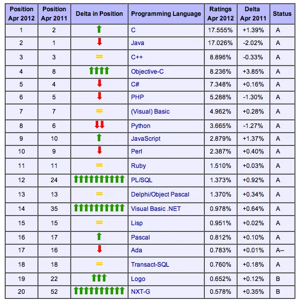

Aktuelle Standardtechnologien

Quelle: TIOBE Programming Community Index - April 2012

A first overview.
michael.eichberg@dhbw.de, Raum 149B
1.0.1.1
https://delors.github.io/ds-architectures/folien.en.md.html
https://delors.github.io/ds-architectures/folien.en.md.html.pdf
AI assistants (in particular Claude, but also ChatGPT, Ollama with Gemma/LLama/Qwen, OpenCode with Kimi, etc.) were used to assist in the creation of the slides. This was done, for example, to efficiently generate graphics (i.e. SVG files), or to generate summary tables. Furthermore, AI was used for general quality assurance. Content that may have been suggested by an AI was explicitly validated and adapted whenever it was incorporated.
An architectural style is formulated in the form of
(interchangeable) components with clearly defined interfaces
the way in which the components are connected to each other
the data exchanged between the components
the way in which these components and connections are configured together to form a system System.
Connector
A mechanism that mediates communication, coordination or co-operation between components. Example: Facilities for (remote) procedure calls (RPC), message transmission or streaming.
Traditional 3-tier Architecture
This architecture can be found in many distributed information systems with traditional database technology and associated applications.
The presentation layer represents the interface to users or external applications.
The processing layer implements the business logic.
The persistence/data layer is responsible for data storage.
Dependencies between the components are realised using the Publish and Subscribe paradigm with the aim of loose coupling.
Taxonomy of coordination approaches with regard to communication and coordination:
Coupled in time | Decoupled in time | |
|---|---|---|
Referentially coupled | Direct Coordination | Mailbox Coordination |
Referentially decoupled | Event-based Coordination | Shared Data Space |
Event-based Coordination
Shared Data Space
Event-based coordination in combination with shared data space is often used to realise publish and subscribe architectures.
Direct coordination
A process interacts directly (⇒ temporal coupling) with exactly one other well-defined process (⇒ referential coupling).
Mailbox coordination
The processes communicating with each other do not interact directly with each other, but via a unique mailbox (⇒ referential coupling). This means that the processes do not have to be available at the same time.
Event-based coordination
A process triggers events to which any other process reacts directly. A process that is not available at the time the event occurs does not see the event.
Shared data storage
Processes communicate via tuples that are stored in a shared data space. A process that is not available at the time of writing can read the tuple later. Processes define patterns with regard to the tuples they want to read.
A distinction can be made between four layers:
Hardware: processors, routers, power supply and cooling systems.
Normally completely transparent for customers.
Infrastructure: Use of virtualization techniques for the purpose of allocating and managing virtual storage and virtual servers.
Platforms: Provides higher level abstractions for storage and the like.
Example: The Amazon S3 storage system provides an API for (locally created) files that can be organized and stored in so-called buckets.
Application: Actual applications, such as office suites (word processing programmes, spreadsheet programmes, presentation applications).
Comparable to the suite of applications that are delivered with operating systems.
Microservices
A simple microservice that offers a REST interface and emits events.
Where are the challenges?
A major challenge is the design of the interfaces. To achieve true independence, the interfaces must be very well defined. If the interfaces are not clearly defined or inadequate, this can lead to a lot of work and coordination between the teams, which is actually undesirable!
can be deployed independently/are independently deployable
(... and are developed independently.)
model a business domain
(Often along a bounded context or an aggregate determined using DDDs.)
manage their own state
(I.e. they have no shared database.)
are small
(Small enough to be developed by (max.) one team.)
flexible in terms of scalability, robustness and the used technologies
allow the architecture to be aligned with the organization (see Conway's Law)
Traditional Layered Architectures
Microservices Architectures
Microservices are flexible with regard to the use of technology and enable the use of “the most suitable” technology.

Quelle: TIOBE Programming Community Index - April 2012
Well designed microservices can also be scaled very well.
The implementation of transactions is one of the biggest challenges in the development of microservices.
A saga is a sequence of actions that are executed to implement a long-lived transaction.
Sagas cannot guarantee atomicity. However, each system can guarantee atomicity (e.g. by using traditional database transactions).
If the transaction needs to be aborted, a traditional rollback cannot be performed. The saga must then carry out the corresponding compensating transactions, which undo all previously successful actions.
The processing sequence of the actions can be optimized to minimize the probability of rollbacks. In this case, the probability of a rollback occurring during the "package and send order” step is significantly higher than for the “award customer bonus” step.
The orchestrated saga is one way of implementing long-lived transactions.
Conceptually simple
High degree of domain coupling
As this is essentially domain-driven coupling, this coupling is often acceptable. The coupling does not generate any technical debt.
High degree of request-response interactions
Risk that functionality that would be better accommodated in the individual services (or possibly new services) is moved to the ordering service.
A major problem with choreographed sagas is keeping track of the current status. This problem can be alleviated by using a “correlation ID”.
Where could there be a problem?
Solution Ideas
2PC is not an option in the context of microservices (too slow, too complex)
Changing the order of actions (1st publish then 2nd update) still leads to inconsistencies
notifying the event processing middleware (synchronously) - i. e. as part of the database update - is also not an option:
What happens if the middleware cannot be reached?
What happens if the event cannot be processed?
Strict consistency cannot be achieved.
(a) Solution: Outbox Pattern
The actions are (additionally) saved in an outbox table and then processed asynchronously.
This enables eventual consistency to be achieved.
The choice of software architecture is always a consideration of many trade-offs!
Other aspects that can/must be considered:
Cloud (and possibly serverless)
Mechanical Sympathy
Testing and deployment of microservices (keyword: Canary Releases)
Monitoring and logging
Service meshes
...
Sam Newman, Building Microservices: Designing Fine-Grained Systems, O'Reilly, 2021.